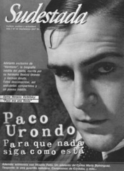

Buscar
La guerrilla de Teoponte: "Volvimos a las montañas"
Apenas un par de años después de la derrota del Che en Ñancahuazu, el ELN volvió al monte para intentar concretar aquella revolución interrumpida. Aniquilada por un cerco criminal, la experiencia guerrillera de Teoponte se perdió en el olvido. Al menos hasta que un historiador boliviano rescató de las sombras los secretos del segundo foco guevarista en su país. Sudestada dialogó con el autor de "Sin tiempo para las palabras. Teoponte: La otra guerrilla guevarista en Bolivia", inédito en Argentina.
Edición N° 62
Septiembre 2007
Revista bimensual
Comprar edición impresaSumario
- Paco Urondo: Para que nada siga como está
- Las puertas de la tierra, de Carlos María Domínguez
- Versos incómodos
- Vicente Feliú: Las canciones, nuestra herramienta de lucha
- Maldito seas, Andrés Caicedo
- La guerrilla de Teoponte: "Volvimos a las montañas"
Compartir Articulo
Una historia termina el 9 de octubre de 1967. Una ráfaga de ametralladora rompe el silencio de la escuelita en La Higuera y es el final elegido por los cronistas para retratar un tiempo único. Pero ese mismo instante, justo cuando las crónicas terminan, fue el elegido por el historiador boliviano Gustavo Rodríguez Ostria para iniciar su trabajo. En su caso, la muerte del Che Guevara no fue otra cosa que el punto de partida para una investigación de extraordinario valor documental y humano, que se publicó en Bolivia en 2006 con el título Sin tiempo para las palabras. Teoponte: La otra guerrilla guevarista en Bolivia.
La historia de la aventura foquista del Ejército de Liberación Nacional (ELN) en Teoponte, continuidad evidente con respecto al proyecto (y el método) que eligió Guevara para avanzar con su sueño revolucionario a nivel continental, quedó sepultada en el olvido más perfecto. Con los años, Teoponte no fue más que un fantasma en la memoria de un puñado de sobrevivientes: en julio de 1970, 67 combatientes del ELN volvieron a las montañas para soportar una derrota incluso más dura que la de Ñancahuazu. 58 murieron en menos de cien días, hasta que el ejército desbarató el foco en el monte y aniquiló su apoyo urbano. Hasta la investigación de Rodríguez Ostria poco se sabía de sus integrantes (guevaristas, pero también trotskistas, estalinistas, maoístas y cristianos en sus filas); nada se conocía del papel de Cuba en el proyecto y menos aún del entramado de la derrota guevarista.
¿Qué elemento lo impulsó a comenzar la investigación para el libro?
Vale la pena establecer, en principio, que no pertenecí al ELN ni a la guerrilla. Tampoco conocía previamente a ninguno de los 67 participantes.
Hay dos momentos en la investigación, sin que pueda establecer cuándo pasé del uno al otro o quizá nunca los abandoné y conviví con ambos. Al principio es un acto meramente intelectual. El desafío de un historiador de reconstruir un pasado desconocido. Luego, toma un cariz emocional: me comprometí con el tema, con los vivos y los muertos, y navegué en mares subjetivos, intentando no perder la objetividad.
En principio, allá por el 2000, pensé realizar un trabajo corto, limitado a la acción en el monte y escrito a cuatro manos con Jorge Ruiz Paz, sobreviviente de Teoponte. No se pudo. Jorge murió en La Habana en octubre de 2003, cuando la investigación se hallaba en curso.
A medida que me adentraba en los datos y en el relato, me di cuenta de la complejidad del tema y decidí avanzar hacia los antecedentes de la guerrilla, ver sus conexiones con Cuba, Chile, Argentina. Establecer el papel de los trotskistas del Secretariado Unificado y de los cristianos.
¿Qué era, a ciencia cierta, lo que se conocía hasta ese momento en Bolivia sobre Teoponte?
Era un tema totalmente desconocido. En 1970, Hugo Assman un pastor metodista que vivía en Bolivia, muy vinculado a la Teología de la Liberación, publicó una serie de documentos y balances sobre la guerrilla. Se trataba de documentos para explicarse la rápida derrota de la guerrilla y, por su carácter, eran escasamente narrativos.
La publicación en el libro del diario de Néstor Paz Zamora, ex seminarista y católico practicante, ayudó a generar la impresión de una guerrilla organizada desde la Universidad y con la convergencia de distintos núcleos cristianos, tanto militantes de una escisión del Partido Demócrata Cristiano, como los ligados a la Congregación Mariana y la Juventud Estudiantil Católica. En los libros y manuales de historia boliviana, prevalece esta interpretación, totalmente alejada de los hechos. Existieron cristianos efectivamente, pero no eran el grupo más numeroso y la guerrilla fue organizada estrictamente bajo las concepciones guevaristas, en un principio con el apoyo de Cuba. El propio papel de Cuba se desconocía, como así las conexiones con el Partido Socialista de Chile y el ELN de Argentina. En la memoria oficial también estaba sepultada la participación del POR-Combate, una organización trotskista al mando de Hugo González, que si bien no llegó en cuanto tal a Teoponte, participó en la primera fase de la organización.
En seis años de investigación, habrán convivido momentos de entusiasmo y otros de zozobra. Me gustaría preguntarle si en algún tramo sintió que el tema a investigar desbordaba sus posibilidades.
No actué como un historiador positivista decimonónico, lejano al objeto que estudia. Guardando las distancias para no enturbiar los resultados, me vinculé con las familias de los combatientes. Entendía que se trataba de organizar una historia de doble curso, ellos y ellas me confiaban sus recuerdos y yo les devolvía información sobre sus seres queridos. Me sumergí así en un mundo de muerte, de desaparecidos, de sangre y de tragedia. Hubo momentos en que sentí que me quebraba, que era una responsabilidad demasiado grande, con costos emocionales muy grandes. No soy el mismo que empezó la investigación. Soy más sensible frente a las alternancias de la vida y la muerte.
2.
La preocupación del historiador boliviano por indagar en las raíces del foco en Teoponte no sólo permitió acercarse a decenas de historias de vida conmovedoras: también echó por tierra las especulaciones alrededor de las diferencias entre el proyecto continental del Che y la estrategia del gobierno cubano. Después de la derrota de Ñancahuazu, Cuba garantizó la continuidad del plan boliviano rescatando a los sobrevivientes y poniéndolos al frente del entrenamiento de nuevos reclutas en los montes de Baracoa (mítico escenario para la preparación de guerrilleros regionales) con el objetivo de regresar al escenario que, se creía, representaba el eslabón más débil del sistema en América Latina. Es decir, el gobierno cubano compartía con el Che la caracterización de Bolivia y, por esa razón, decidió preparar a otro grupo del ELN para repetir el intento de forjar la primera revolución socialista triunfante en el sur americano. De hecho, Pombo y Benigno (dos de los tres cubanos que consiguieron la hazaña de eludir el cerco de Ñancahuazu), integraron el Estado Mayor del ELN que se entrenaba en la Isla, apenas por detrás del boliviano Inti Peredo en la jefatura guerrillera.
Sin embargo, una serie de acontecimientos terminarían por decidir al gobierno cubano el retiro de su presencia en Bolivia a partir de 1969, aspecto que desarrolla en detalle el trabajo de Rodríguez Ostria.
Uno de los elementos relevantes del libro es el papel jugado por Cuba en la preparación del foco, una vez derrotado el Che. ¿Le parece que este protagonismo cubano (al menos en el inicio de la operación) confirma que el Estado en la Isla compartía la caracterización que tenía el propio Che sobre las chances de generar un brote revolucionario en Bolivia?
Dado el secreto en que se mueve todavía Cuba, solamente podemos trabajar en hipótesis. Una de las razones por las cuales Cuba -supongo- organiza la primera fase de la guerrilla, hasta poco antes del asesinato de Inti Peredo en 1969, pudo ser precisamente ésa, pero también de prestigio frente a la izquierda extraparlamentaria. No podía abandonar el escenario de derrota sin tratar de revertirlo. Sin embargo, Cuba cambió de posición en la medida que la coyuntura boliviana cambiaba. El general René Barrientos murió (o fue asesinado) el 27 de abril de 1969, lo que permitió que se restablezcan las libertades políticas. El 26 de septiembre de 1969, el general Alfredo Ovando dio un golpe de Estado y montó un gobierno de corte nacionalista revolucionario. Se nacionalizó la Gulf Oil, petrolera yanqui. En mayo de 1970, la poderosa Central Obrera Boliviana aprobó en su IV Congreso la llamada "Tesis Socialista", que es un alegato a la acción insurreccional de las masas.
En esas condiciones, todos los supuestos para el foquismo se derrumbaban. Me parece que Cuba se retiró prudentemente en 1969. Cuatro años más adelante, sin embargo, en 1973, apoyarían una nueva guerrilla en Bolivia, que no despegaría finalmente. Claro que era otra época: el gobierno dictatorial del coronel Hugo Banzer...
La nota completa en la edición gráfica de Sudestada Nº 62-Septiembre 2007
Comentarios
Hugo Montero
Articulos más vistos


LIBRERÍA SUDESTADA

Colección infantil

Distribuidora de Libros

Suscripción

Sudestada en URUGUAY

Otros articulos de esta edición
Maldito seas, Andrés Caicedo
Mezcla de joven rebelde y poeta feroz, la fama del colombiano Andrés Caicedo fue creciendo hasta transformarse hoy en mucho ...
Las puertas de la tierra, de Carlos María Domínguez
Fragmento del libro Las puertas de la tierra. La escena de acero de los puertos y los marinos uruguayos, del ...
Paco Urondo: Para que nada siga como está
De próxima edición, "Hermano, Paco Urondo" es un pasaje a la intimidad de la infancia del poeta, a sus pasiones ...
Versos incómodos
"Ya no soy / de aquí: apenas me siento una memoria / de paso. Mi confianza se apoya en el ...
Vicente Feliú: Las canciones, nuestra herramienta de lucha
Las palabras borran la lejanía: un intercambio de ideas vía mail se convirtió en una charla intensa con Vicente Feliú: ...